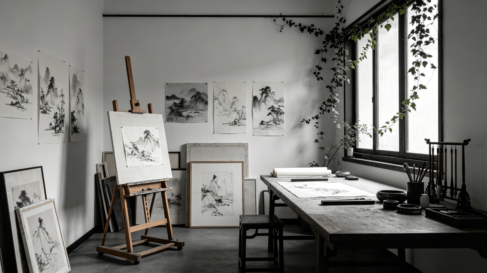
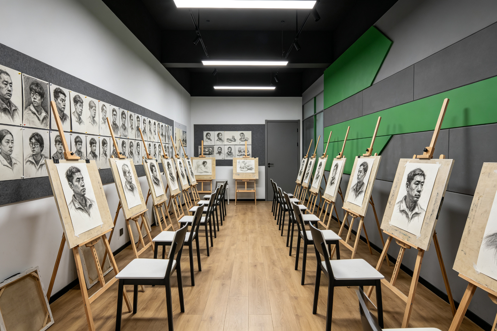
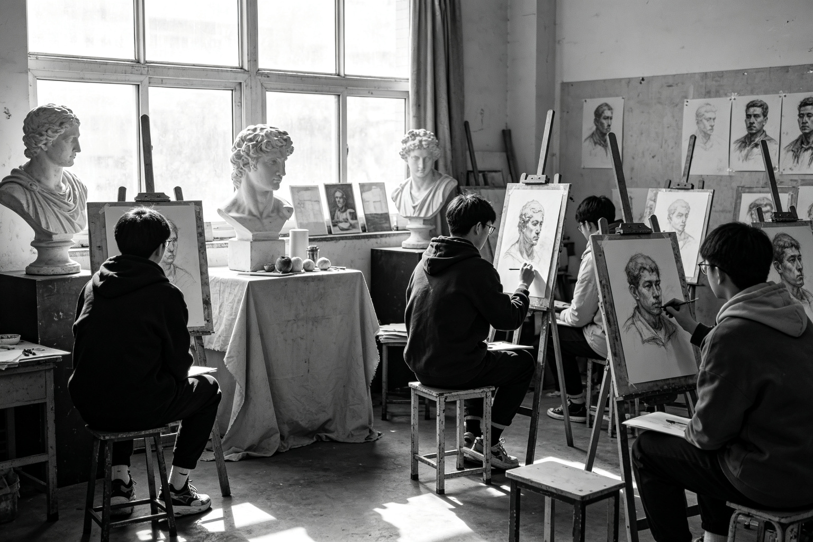
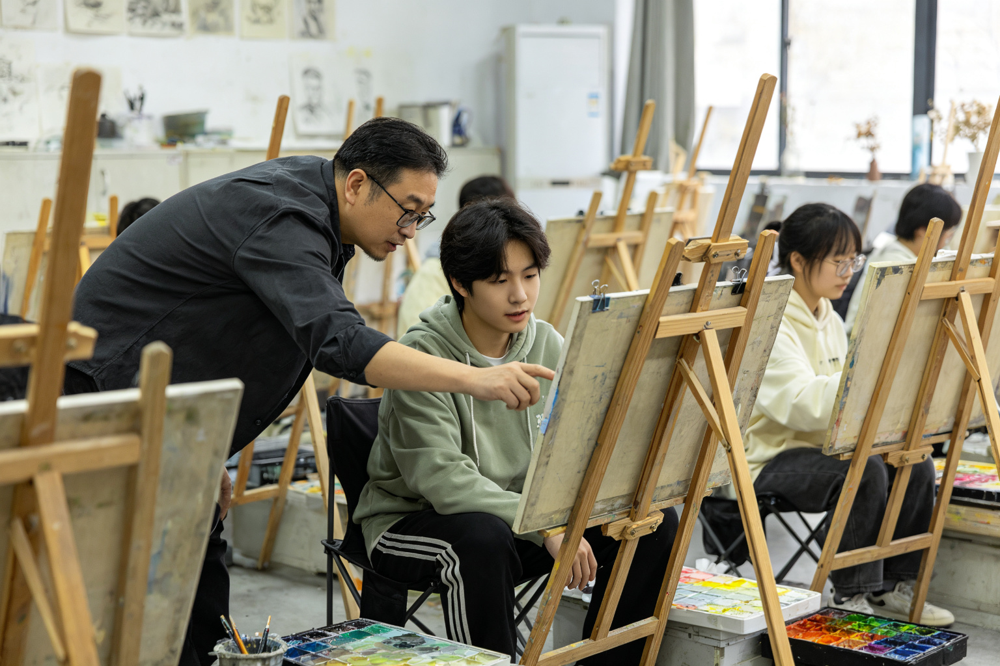

01 想象力
保护孩子的想象力与观察力
不代笔、不描摹、不套模板。我们引导孩子用自己的眼睛看、用自己的手表达，让每一笔都来自真实的观察与感受。

Why Qingteng
嘉兴美术培训机构很多，但真正把“孩子怎么学画”想清楚的不多。青藤画室相信：画画不是复制一个模板，而是学会用眼睛和心去观察这个世界。
不代笔、不描摹、不套模板。我们引导孩子用自己的眼睛看、用自己的手表达，让每一笔都来自真实的观察与感受。
素描、速写、色彩，统一观察方法、统一造型逻辑、统一表达语言。学会画画的同时，学会思考画面背后的结构与美感。
不止于应试，更受益于审美和思维。无论孩子未来是否走美术道路，这份观察力与感受力都将伴随一生。
以苏派为体，以青藤为魂。
承古韵之精微，养今我之性灵。师古而不泥古。
—— 青藤画室教学理念 · 嘉兴美术培训 · 一人贯通教学体系
Courses
嘉兴少儿美术培训的核心不是"画得像"，而是保护孩子的想象力与观察力。通过创意绘画、线描写生、色彩感知与综合材料创作，让孩子建立对美的敏感与表达的自信。
嘉兴中考美术培训为有升学意向的初中生建立扎实的造型基础：素描几何体与静物、人物速写、色彩入门，以统一观察方法与造型逻辑应对美术特长生考试。
嘉兴高考美术培训面向美术高考生，系统训练素描头像、色彩静物、速写创作三科，一人贯通教学让三科之间逻辑统一，训练效率更高，文化课与专业课兼顾规划。
零基础也可以拿起画笔。成人美术课程以素描、水彩、油画、水墨为载体，在安静的观察与表达中放松身心，找回属于自己的审美时间。
Student Works


Studio Space




About the Teacher
青藤画室创始人，曾在北京大型美术培训机构任教多年，将一线集训经验带回嘉兴。
创始人坚信：孩子学画最大的浪费，是素描归素描、速写归速写、色彩归色彩，三科各学各的，观察方法互相打架。青藤画室以"一人贯通教学体系"贯穿始终——统一观察方法、统一造型逻辑、统一表达语言，让每一步学习都彼此支撑。
教学上强调观察能力、思考能力、审美能力，拒绝机械临摹。以苏派造型体系为体，以青藤精神为魂：承古韵之精微，养今我之性灵，师古而不泥古。不止于应试，更受益于审美和思维。
FAQ
关于嘉兴少儿美术、中考美术、高考美术培训，家长最关心的都在这里。点击问题展开答案。
Art Guides
关于嘉兴少儿美术机构怎么选、中高考美术如何规划、AI时代为什么审美能力更重要——我们用长期内容，回答家长真正关心的问题。
嘉兴的儿童美术培训机构越来越多，家长反而更难选了：有的主打"开发右脑"，有的宣传"名师带考"，有的晒一堆获奖证书……这篇文章不替任何机构说话，只给您一份可以拿着去考察任何一家嘉兴画室的清单。
阅读全文"孩子初二了，现在学美术还来得及吗？""初一就开始会不会太早？"这是嘉兴家长咨询中考美术问得最多的两个问题。先说结论：来得及，但"从什么时候开始"决定了备考的从容程度。
阅读全文美术高考是"专业+文化"两条腿走路。什么时候集训、集训多久、花多少钱、怎么选嘉兴的画室——这篇文章把整条时间线摊开给您看，让家长心里有数。
阅读全文孩子画了一幅"太阳是蓝色的、云在脚下"的画，家长脱口而出："太阳怎么会是蓝色的？"——这句无心的话，可能正在掐灭一个孩子的想象力。这篇文章想和嘉兴的家长认真聊聊这件事。
阅读全文这几年，AI 生成图片的能力进步快得惊人：输入一句话，几秒钟就能得到一张"画得比多数人好"的图。于是很多嘉兴家长开始问：孩子学画画，还有意义吗？这篇文章想给一个认真的回答：有，而且比过去更重要。
阅读全文"照着范画临摹"是很多美术机构提高"出图率"的捷径：一张画贴上墙，家长看着满意，孩子看着有成就感。但作为老师，我们清楚地知道，机械临摹给的只是"看起来会了"，拿走的是孩子真正需要的三种能力。这篇文章，把我们的想法一次讲透。
阅读全文很多嘉兴家长送孩子学画画，心里的预期是"学个才艺、画得好看、将来多条路"。这些都没错，但如果只看这几样，就错过了美术教育最值钱的部分。这篇文章想讲清楚：学画画真正培养的，是五种能带走一生的能力。
阅读全文孩子学的每一样东西，家长都会忍不住想一个问题：将来有用吗？美术教育的影响很难用"考级证书"或"一幅画"来衡量，但它真实地作用在孩子未来几十年的生活里。这篇文章，我们把这种影响拆开来讲。
阅读全文